Мёртвая петля
Описание
Цель проекта: разработать программный продукт, представляющий собой виртуальную физическую лабораторию, моделирующую движение шарика в «мёртвой петле» при различных начальных условиях
Язык программирования: C++
Фреймворк: Qt4 / Qt5
Лицензия: GNU GPL v3
В программе моделируется поведение шарика, который совершает «Мёртвую петлю», то есть катится по круговому сектору. В модели можно изменять: угол наклона начального сектора (по которому шар набирает скорость), его длину, радиус проходимой шаром окружности и радиус шара.
В программе выводятся графики:
- скорость шара
- угловая скорость шара
- изменение высоты шара относительно нижней точки желоба
Скриншоты
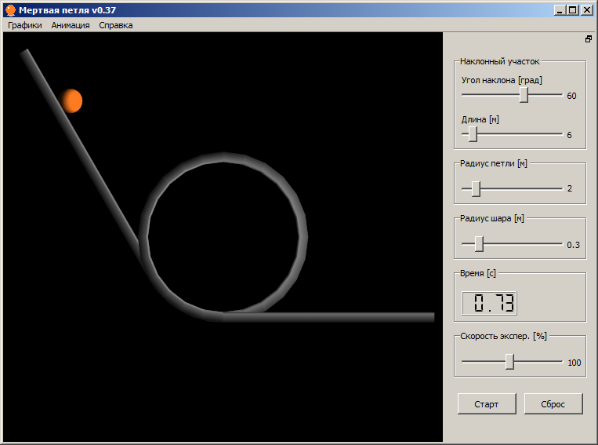
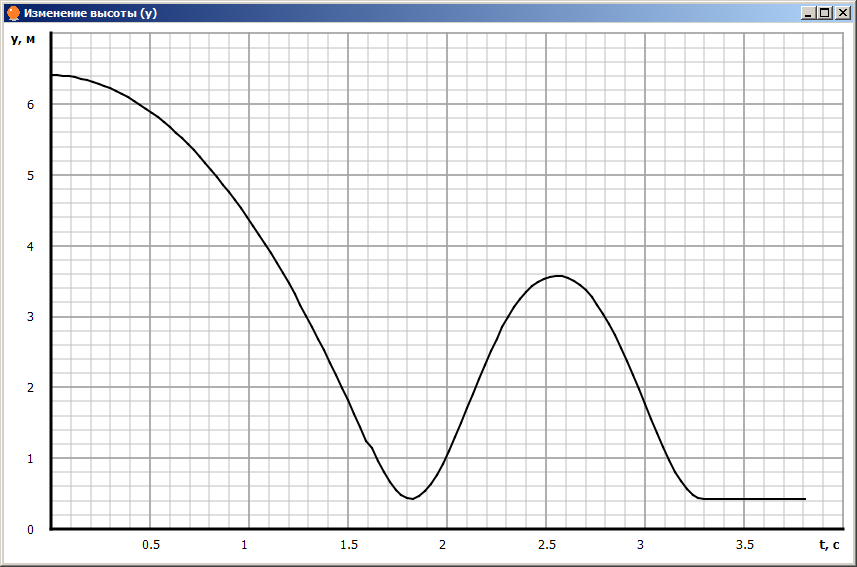
Загрузка
Исходный код:
deathloop-1.0.zip
deathloop-1.0.tar.gz
Git:
https://github.com/AlienCowEatCake/deathloop.git
Бинарные сборки:
Архив версий:
Releases/
Список изменений
[v1.0] - 31 Dec 2016
- Глобальный рефакторинг, в ходе которого исправлено множество мелких багов
- Общий код вынесен в отдельный модуль, который теперь используется и в других проектах
- Добавлена английская локализация
- Подготовлены официальные сборки для GNU/Linux и macOS
- Исправлены проблемы с текстурами для устаревших видеокарт
- Доработан дизайн приложения
- Добавлена кастомизация внешнего вида графиков
- Изображения графиков и текущего состояния сцены теперь можно сохранять
- Реализована базовая поддержка дисплеев с высоким разрешением
- Реализована базовая поддержка управления сценой жестами типа Pinch и Pan
Предыдущие версии
[v0.38] - 25 Aug 2015
- Добавлен альтернативный софтверный рендер для систем, плохо поддерживающих OpenGL
- Исправлено восстановление исходного состояния сцены
- Обновлены ссылки на проект
- Обновлены сборочные скрипты под Windows
[v0.37] - 05 Jan 2015
- Построитель графиков перенесен с OpenGL на QPainter, исправлены найденные ошибки
- Исправлены ошибки линковки при использовании Qt 5.4 в конфигурации -opengl dynamic
- В сборочных скриптах под Linux добавлено экранирование переменных
- Поправлены опции компиляции
[v0.36] - 24 Aug 2014
- Добавлен антиалиасинг
- Исправлены баги с освещением
- Исправлены баги с непрорисовкой моделек из некоторых положений
- Переписан построитель графиков
- Исправлена и включена по умолчанию анимация качения шарика
- Исправлена ошибка в расчетах угловой скорости
- Скорость эксперимента теперь можно регулировать в реальном времени
- Добавлен индикатор времени, прошедшего с начала эксперимента
[v0.35] - 20 Aug 2014
- Исправлен глюк с отображением шрифтов в Windows 98 (сломано в v0.34)
- Улучшена поддержка системных шрифтов
[v0.34] - 07 Aug 2014
- Добавлена совместимость с Qt5
- Форма основного окна теперь одна для всех платформ
- В основном окне теперь используются системные шрифты, если они поддерживают кириллицу
- Добавлено управление с клавиатуры графическим виджетом, если он в фокусе
- Изменен порядок передачи фокуса между элементами управления на адекватный
- Анимация шарика сделана опциональной
- В окне лицензии исправлены адреса ссылок, сами ссылки теперь кликабельны
- Убрано все ненужное из файла проекта
- Исправлены и доработаны сборочные скрипты
- MinGW 4.8.x некорректно работал с __attribute__((packed)), заменено на #pragma pack
- Убраны ненужные подключения <GL/glext.h>
- Вместо <GL/glu.h> используется платформонезависимый <QtOpenGL>
- Проект портирован под MSVC (протестировано на MSVC 2005 и MSVC 2013)
- Исправлены все предупреждения компилятора
- Исправлены найденные утечки памяти и переполнения
- Бинарные билды теперь собираются в MSVC 2013 (кроме legacy), появиласть сборка для x64
[v0.33] - 09 Jan 2014
- Исправлены и оптимизированы сборочные скрипты для Win32
- В заголовок главного окна добавлена версия программы
[v0.32] - 02 Dec 2013
- Добавлен обработчик ошибки численного моделирования, которая приводила к зависанию программы в бесконечном цикле
[v0.31] - 02 Dec 2013
- Исправлена ошибка в анимации качения шарика
[v0.30] - 02 Dec 2013
- Добавлена анимация качения шарика
- В случае, когда шар не может преодолеть петлю, теперь указывается причина
[v0.29] - 01 Dec 2013
- Убран скроллбар в окне с лицензией в Win32 версии
- Добавлен пункт меню "О Qt"
- Исправлена подпись окна-заставки
- Увеличена производительность при отрисовке графиков
- Увеличена производительность при масштабировании 3D моделей
- Исправлен баг: при старте программы фактические начальные значения не всегда соответствовали положениям ползунков
- Текстура желоба заменена на более светлую
[v0.28] - 11 Nov 2013
- Почти полный рефакторинг кода, исправлено множество багов, движок обновлен до последней версии, используемой в проекте pendulum
Список предыдущих изменений, увы, не сохранился.
Модель
В рамках данного проекта мы моделируем движение шарика с качением без скольжения в «мёртвой петле», образованной прямоугольным желобом.
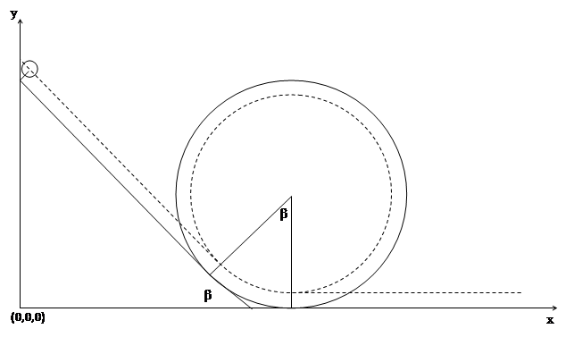
Траектория движения центра шарика при прохождении петли
β - угол наклона начального участка
L - длина начального участка петли
R - радиус петли
r - радиус шарика
α - текущий угол, с помощью которого задаём положение шарика
Движение шарика разбивается на четыре основных участка: движение по наклонной части желоба, движение по входному в петлю сектору β, движение в петле и выкатывание шарика по горизонтальному участку желоба.
Поскольку мы имеем дело с качением, для решения задачи нам необходимо составить уравнение динамики вращательного движения твёрдого тела относительно оси вращения.
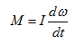
Необходимо вычислить момент инерции. Рассмотрим вращение шарика относительно неподвижной оси, совпадающей в данный момент времени с мгновенной осью вращения. Нам известен момент инерции шарика относительно оси, проходящей через центр масс. Поэтому мы можем воспользоваться теоремой Штейнера, если найдём расстояние между осями:
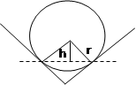
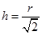
Поперечное сечение шарика и желоба
Вращение шарика при качении происходит вокруг оси, обозначенной пунктиром.
Воспользуемся теоремой Штейнера.
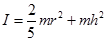
Теперь рассмотрим первый участок движения шарика:
Относительно данной оси в уравнении динамики вращательного движения твёрдого тела ненулевым является только момент силы тяжести.
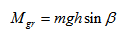
Мы можем вычислить характеристики шарика:
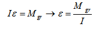 ε=M_gr/I" class="img_model">
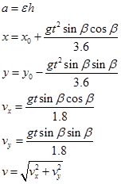
На втором участке при расчёте углового ускорения шарика и мгновенного ускорения поступаем аналогично. Движение рассматриваем как движение по окружности (пунктир на рисунке соответствует траектории движения центра шарика).
Угол α изменяется от – β до 2π
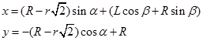
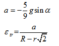
Так как 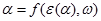, найдём α при помощи метода Эйлера. Реализация его алгоритма находится непосредственно в коде.
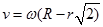
Третий участок отличается от второго смещением по ещё одной оси координат (необходимо для движения именно по петле, а не по замкнутой окружности).
Движение по последнему участку:
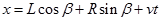
Случай падения находим, если выполняется:
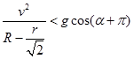